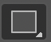
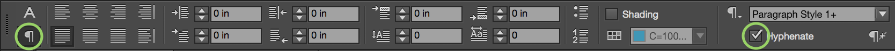
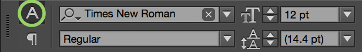

Welcome to InDesign! This guide serves both as a starting point and as a reference for creating documents in Adobe InDesign Creative Cloud.
About this Class
This class covers the basics of desktop publishing using Adobe InDesign CC by creating a magazine spread. Desktop publishing programs are used to create documents with multiple pages which primarily use text and images. InDesign can be used to create newspapers, newsletters, posters and magazines.
Prerequisites
There are no prerequisites for InDesign, other than basic familiarity with the Macintosh or Windows operating system.
Other Requirements
For this class you will need the files in the InDesign class files folder, and a computer with Adobe InDesign CC installed on it.
Today’s Project
We will use Adobe InDesign to create a two-page, printable magazine spread with a cover page. We will incorporate text, graphics, and some common publishing techniques. We will also learn how to structure a document and how to approach design choices. We will also acquire some commonly used layout terminology.
Page Layout in Adobe InDesign
Adobe InDesign is a professional page layout software application that is used to design sophisticated publications. Like others of its type (like PageMaker, QuarkXPress, and Microsoft Publisher), InDesign is especially useful when we want to:
Combine text and graphics on a page
Control advanced formatting of text
Create templates to make our publications consistent and easier to work with
Print to a laser or color desktop printer
Save and send work to a printing service
Before starting a project in InDesign, it is important to decide if InDesign is the best option for our needs, or if a word processing application like Microsoft Word would be more appropriate.
Page Design vs. Word Processing
Although layout applications readily accept text, their main function is positioning imported text and graphics in an appealing way, not text composition. If you want to create a document containing a significant amount of text and a detailed layout you may want to use two programs, first composing the text in a word processing application, then copying it to a layout application such as InDesign.
It is important to understand that these two types of applications offer complementary features. Layout applications present sophisticated layout options, but they lack some of the text manipulation tools available in word processors, and although most word processing programs include layout options, their features are not as efficient or powerful as a program like InDesign.
Not sure which to use? These two sections outline some aspects that will help you decide how to complete your project.
Page layout software is better suited for:
Documents that require precise layout of text and graphics like brochures, newsletters, professional-looking flyers, and magazine layouts
Projects that require visual layout across multiple pages
Advanced typographic adjustments
Accurate color management within publications
Templates used for consistent layout
Word processing software is better suited for:
Medium or long text heavy documents
Documents that include endnotes or footnotes
Text documents that require few or no graphics, such as reports, dissertations, theses, or letters
Documents that require very light layout of text and graphics together, such as basic flyers
Understanding the Workspace
We’ll start by getting acquainted with the InDesign workspace.
The InDesign workspace includes features common to other Adobe applications like Photoshop or Illustrator. These programs all include a visual representation of the document in progress, displayed with color-coded cues that indicate frames and objects. Around the document is an array of tools, panels, and menus.
Exercise: Create a New Document
To launch InDesign, Click on the InDesign CC icon in the dock. In the Windows operating system, Navigate to Indesign CC in the start menu.
Go to File > New > Document
In the New Document window, adjust the settings:
Intent: Print
Number of Pages: 1
Start Page #: 2
Facing Pages: Selected
Bleed: 0p9
Finally, click "OK" to create your document.
Page Setting Overview
Intent defines the purpose of the document. You can create Print, Web, and Digital Publishing documents. Your selection activates various document sizes under "Page Size" .
Number of Pages specifies how many pages the document will start out with. You can always add additional pages once the document is created.
Start Page # is useful for page numbering. It defaults to 1. If you prefer the page numbering to start on 692, for example, you can do so by typing the numerical value in this section.
For this document we started on Page 2, so it will begin with a full spread. If we began on page 1, it would automatically create the first page as a stand-alone page.
Facing Pages makes left and right pages face each other in a double-page spread, generally for print materials like magazines and books. Deselecting this option will allow each page to stand alone, such as when you’re designing flyers or posters.
Bleed allows you to print objects that are arranged at the outer edge of the defined page size. If an object is positioned at the edge of a page, some white may appear at the edge of the printed area due to slight misalignment during trimming. For this reason we position objects that are on a page edge a little beyond that edge, and trim after printing. Bleed area is shown by a red line on the document. You can set bleed area settings from Bleed in the Print dialog box. For this document we defined a bleed area of 0p9. When we create a background using the rectangle tool, we will extend the box to the red bleed boundary on the outer edge of the document.
Interface Components
Here we'll explore the layout of the program itself. The different areas of InDesign are defined and summarized here, so if you get lost later in the manual you can always refer back to this section. The terminology here also applies to other Adobe design software like Photoshop and Illustrator.
Application Bar
The Application Bar contains the Workspace Switcher menu and a shortcut to Adobe Bridge and Adobe Stock. In Windows, the Application Bar also contains the File, Edit, View, and other menus. The Workspace Switcher menu can be used to arrange multiple windows. Use the drop-down menu to choose one of the many available window layout options.
Document Window
The Document Window displays the file that you are currently working on. If you have multiple files open, each file appears as a tab in the Document Window. Inside the Document Window is the printable area of the Workspace, also known as the Page.
Tools panel
The Tools Panel contains tools used to create and modify objects (like a toolbox) . To select a tool, simply click it. Tools with a triangle in the lower-right corner have additional tools hidden beneath them. To display hidden tools, click and hold a tool icon; a drop-down menu showing the hidden tools will appear.
Control panel
The Control panel across the top of the page offers options specific to the tool you are currently using. Keep in mind that there may be additional options for your selected tool beyond those displayed in other panels and menus.
Panels dock
Panels are sets of task-specific controls to help modify and monitor type, objects, location, alignment, and more. By default, all Panels are closed and hidden beneath icons in the Panel Dock. Icons in the Panel Dock represent groups of related Panels; to open a Panel Group, click an icon in the Panel Dock.
Each Panel within a Panel Group is displayed on a separate tab. To bring a Panel to the front of the group, click its tab.
To close a Panel group, click the double arrows in the upper-right corner of the Panel Group.
Panels can also be displayed individually. To show a panel, go to the Window menu and Click its name. To hide the panel, go to the Window menu and Click the panel name again.
Navigating the Workspace
Selection Tool
Selection Tool: Used to select text/graphics frames and to work with an object's bounding box for general layout tasks, such as positioning and sizing objects.
Shortcut:V or esc
Zoom Tool
Zoom Tool: Allows you to zoom in or zoom out to increase or decrease the document display size.
You can also zoom with any tool selected by holding Alt/option and scrolling up or down with the mouse/trackpad
Shortcut:Z
View Style Shortcuts
Fit page in window, Mac: command + 0
Fit page in window, Windows: control + 0
Fit spread in window, Mac: command + option + 0
Fit spread in window, Windows: control + option + 0
In the Tools Panel, Click the Zoom Tool.
To zoom in, Click in the Document Window. You can also use keyboard shortcut Command/Ctrl + Plus key
To zoom out, Hold the Option/Alt key while clicking in the Document Window. You can also use keyboard shortcut Command/Ctrl + Minus key.
Hand Tool
Hand Tool: Used to pan around Pages/Spread when the document is zoomed in beyond the workspace.
Shortcut: Hold spacebar with any tool (except while entering text in a frame).
Zoom in on Page/Spread so it extends beyond the Workspace
In the Tools Panel, Click the Hand Tool.
To pan around the Page/Spread, Click and Drag in the Document Window.
While using any tool, you can switch to the Hand Tool by holding the Space Bar. Release the space bar to switch back to your original tool.
Planning the Document
We are now ready to begin designing the basic layout of our magazine spread. Before we lay out some more features of the document, we need to make sure we have a plan for our design.
When creating a complex document it is a good idea to plan layout and organization before you add text, graphics, or formatting. It is also important to keep some basic design principles in mind, such as consistency, legibility, clear choices in graphics, and composition. We will explore each of these as we work on this project and there are design tips throughout this manual. There are also many useful books and Web sites if you would like to learn more about design principles.
Using the Pages Panel
In InDesign we'll be working with Pages from the Pages panel. You can find the Pages panel at the top of the panels dock (in the upper right of our screen), or you can go to the Menu > Window > Pages. You can open every panel in the program from here. Note that the panels already open have checkmarks to the left.
The Pages panel is divided into two scrollable sections.
Facing Pages vs Single Pages
Since our document is set up in spreads, thumbnails are aligned along a central bar that indicates the binding or central fold of a spread. To set up your document for single pages: File > Document Setup and uncheck "Facing Pages".
The top section for Master Pages automatically contains two thumbnails: a single page named “[None]” and two facing pages named "A-master"
The bottom section contains thumbnails that represent pages in the Document. As we add content to the pages these thumbnails will reflect that. Notice that we currently have a single page in our document, starting on page 2.
For now we'll be focusing on this lower Pages section. We will return to the document section and learn to use Master Pages later.
Exercise: Inserting/Deleting New Pages
In order to create a two-page magazine spread, we will need to insert one more page to our document.
To insert a new page, navigate to the Pages Panel and Click once on the Create new page" icon in the bottom of the panel. This will automatically add a new page to the document.
We can insert as many pages as we need. Click the "Create New Page" icon to insert a few more pages.
For quick navigation to another page in the document, simply Double Click on the thumbnail of your desired page in the Pages Panel.
You can also reorganize pages in the Pages Panel. Try Clicking and Dragging the thumbnail of the last page to the left of the first page thumbnail. As you hover over the destination, a line will appear showing where the page will be dropped.
To delete a page, Select the thumbnail of the page you want to delete (you can hold down the Shift key to select multiple thumbnails). Then Click once on the "delect selected page" icon at the bottom right of the pages panel.
Rulers, Grids and Guides
One of the great things InDesign offers is very detailed control over positioning of content.
First we will adjust our rulers. In InDesign you can pick the units of measurement you want to use. The default units are "Picas". A pica is a standard publishing unit, which equals 1/6 of an inch. Picas are subdivided into 12 points per pica, 72 points per inch. These terms are very specialized, so for this project we will change the units to inches.
Using Rulers
In the Menu bar, go to View > Show Rulers (keyboard shortcut: Command/Ctrl + R ).
To change the default units of measurement, go to the Menu Bar and navigate to InDesign CC > Preferences > Units & Increments
The Units & Increments Preferences dialog box will appear. Under Ruler Units, change the Horizontal unit of measurement to "Inches" from the drop down menu. Do the same for the Vertical unit, and Click OK.
Using the Grid
The Grid is a tool we can use to locate objects precisely where we want them on the page. It works like traditional graph paper, containing evenly spaced horizontal and vertical lines.
We will use the Grid to place content later, and to create more specific structure using guides. We can also customize our grid. Now we'll activate and personalize the Grid for our document.
To show the Grid, go to the Menu bar and navigate to View > Grids & Guides > Show Document Grid . A light gray grid will appear. These lines are visual aids only; they won’t print in the final version.
Since our objects will be fairly large in this document, we’ll want to make our grid units larger. To change our Grid sectors divisions to inches, navigate to InDesign CC > Preferences > Grids
The Grids Preferences dialog box will appear. Under the Document Grid section, change the Horizontal and Vertical grid settings. Under Horizontal, make the Gridline Every: 4 in, Subdivisions: 4 and under Vertical, set the Gridlines to Every: 4 in, with Subdivisions: 4.
Make sure to Check "Grids in Back".
Click "OK" and the grid will appear on your document.
Snapping to the Grid
When placing objects by eye you can end up with content that looks fine at first glance, but on closer inspection is misaligned. For a clean design we want everything to be aligned correctly on a detailed level. Even slight alignment issues can make your publication look less polished overall.
The Grid offers a feature called Snap to Grid which makes it easier to perfectly position objects on the page. When this setting is turned on, you'll find your content boxes naturally want to align with the closest grid line.
To snap objects to the Grid, go to the Menu Bar and navigate to View > Grids & Guides and select "Snap to Document Grid".
Working with Guides
Guides are vertical and horizontal lines that you can create and place individually. These are useful when you want more specific reference lines than those grid provides. We'll use these to plan the layout for our magazine spread.
Click on the ruler on the top of the spread and Drag down into the document. A light-blue guide line will follow your cursor. As you drag, a small gray box to the right of your cursor will display the position of your guideline.
We'll start with the horizontal guides on the left page of our spread. Drag three guides from the top ruler over the left page. Place them at 1" (the first grid line), 3" (the third grid line), and finally one at 3.25".
Now we'll add the horizontal guides we need on the right page. This time drag four guides from the ruler above the right page. Place them at 5" (the fifth grid line), at 5.25", at 7.75", and at 8" (the eighth grid line).
Now we'll create the vertical guides. This time Drag from the left side ruler. Drag out five guides. Place them at 4" (the fourth grid line), at 4.25", at 12.75" and at 13" (the thirteenth grid line).
When we've added all of the guides we need to lock them to avoid accidentally moving them. To lock your guides, navigate to View > Grids & Guides > Lock Guides
Now that we have finished using the document grid to create our guides, we don't need it to be visible anymore. To hide it, navigate to View > Grids & Guides > Hide Document Grid
You can come back to this menu to turn it back on at anytime. Although the grid is not currently displaying, the Snap to Document Grid feature we turned on earlier will still work.
At this point our spread should look like this:
You'll notice that we've created regular .25" gaps between columns and banners. This will keep our content consistently spaced.
Working with Shapes
Rectangles
Before we start adding text and images to our layout, we'll create some background elements using shapes.
Exercise: Adding Shapes
In this exercise we'll create a banner and the background for our text elements.
Rectangle Tool

Use the Rectangle tool to create rectangular shapes.
Shortcut: M
Note: The Rectangle tool is different from the Rectangular Frame tool, which is used to create text/image frames. Rectangle objects are shapes rather than frames, which are used to contain text/images.
Rectangular Frame (left) vs. Rectangle (right)
Select the Rectangle Tool in the Tools Panel.
First we need to set the properties of our rectangle in the Control Panel. Double Click on the Fill. For this project we will choose a cream color. Now change the Stroke to None in the dropdown menu.
Now when we create a shape it will have this Fill and Stroke. Click and Drag a rectangle on the left page between our 4" guide and the centerfold between the two pages, and make it the height of the entire page, including the bleed area.
Draw another rectangle on the second page between the 5" and the 8" guide lines, and make it the width of the entire page, once again including the bleed area. The spread should now look like this:
We'll also create a banner where our title will go.
Draw out a rectangle on the first page between the 1" and the 3.25" guides. Make sure it covers the width of the entire page, from the bleed area to the centerfold.
Change the Fill to a red color in the Control Panel.
Change the opacity of the rectangle to 50% using the Control Panel.
Now we have the design base for our spread, created with guides and blocks of color.
Working with Layers
Now that we have some content down on the page, let’s explore the most important organizing tool in Adobe InDesign. The Layers panel is the best way to organize your artwork in InDesign. It is important to get in the habit of using layers.
You can think of layers as a stack of tranparent sheets. You can add as many layers as you need to stack your content. You can reorder and rename layers, hide them, and lock them.
Using the Layers Panel
First, locate the Layers panel in the Panels Dock on the right, or find it in the Menu bar: Window > Layers .
The Layers panel displays each layer, along with sub-layers showing the content on that layer. To show the sub-layers, simply click the small arrow to the left of the layer name. Both sub-layers and layers can be reordered the same way pages can. Simply click and drag to change the order or to move a sub-layer to a different layer.
To rename a layer, simply double-click on the current name. Labeling layers clearly will make them easy to navigate as your document gets more complex.
Layer Properties
Each layer has two boxes to the left of it that control the visibility and locking of the layer. We will use these features a lot in our workflow.
Visibility: The box on the far left indicates the layer's visibility. By default this box has an eye symbol. Try clicking into this box to turn the visibility on and off. You'll see the content on the layer disappear from your work area. This is useful when you want to zero in on one specific part of your document.
Locking: The next box indicates whether or not the layer is locked. By default layers are unlocked and this box will appear empty. Try clicking into this box. When the padlock symbol appears, you won't be able to edit any of the content on this layer. It is important to lock layers that you want to leave unadjusted while you work on the rest of your document.
Whenever you are adding content, text, images or design elements, get yourself in the habit of checking which layer you are working in, and lock other layers.
Exercise: Creating New Layers
We will be creating 3 layers for the different parts of our project.
To create a new layer, Click the Panel Options Button in the top right-hand corner and Select New Layer, or Click the "Create New Layer icon at the bottom of the layers panel.
Create 2 new layers, labeling one "text" and one "images".
Double Click on "Layer 1" , and rename it "Background" . This is the layer we've been working on that contains our shapes.
In the next section we'll be working with text, so lock the "Background" layer and Select the "Text" layer.
Working with Text
Adding Fonts
InDesign comes with a wide range of pre-installed fonts, but you can easily install an almost unlimited number of additional fonts by downloading them off the internet. Google Fonts, Font Squirrel, FontSpace and DaFont all have large libraries from which you can download free fonts.
One font we will use for our project is "Imprint MT Shadow". If you do not yet have this font, find it in your "Class Files".
Installing Fonts on Mac OS
Open the application Font Book and go to Font Book > Preferences.
Make sure Default Install Location is "Computer".
In "Class Files" double click on "imprint-mt-shadow" to unzip it.
Double click the font file "ImprintMTShadow.ttf".
Click "Install Font".
Installing Fonts on PC
Extract the file "ImprintMTShadow.ttf" from the zip file. Put it in downloads or on your desktop.
Go to wherever you put the file. Right click on "ImprintMTShadow.ttf" and select Install.
Make sure the file is installed by going to Control Panel > Fonts and search "Imprint MT Shadow".
You may need to restart InDesign before you can see your new font in the program.
Creating a Text Frame with the Type Tool
All text created in InDesign is located within a frame. A frame is a container for text or graphic objects. When we add text to our document we will start by creating a text frame.
Before we start working with text, make sure you are working only on the "text" layer (by selecting it, and locking all other layers).
Type Tool
Use the Type tool to create new Text frames or to edit text in existing frames.
You can use the Type tool to convert a shape object into a text frame.
Shortcut: T
Select the Type Tool in the Tools Panel. Your cursor will turn into a text insertion icon.
First we'll create a frame to hold our title. To draw a text frame with the Type Tool, Click and Drag the cursor across the first page, directly on top of the red banner background.
Release the mouse and you will see a blinking text cursor. Type "UW MADISON".
Formatting Characters
We now have text in the default font and size. We'll need to format it for our design.
The Control panel for text contains two main categories that control two sets of text options. These are the Character options (top) and the Paragraph options (bottom).
Character and Paragraph
When working in a text frame, the Character and Paragraph options allow you to different items for the text in that frame.
These options will appear in the Options bar along the top of the screen while you are editing text in a frame.
Character controls things like font face and size, tracking, leading (pronounced ledding), and kerning.
Paragraph options include feature like alignment, indentation, and spacing between paragraphs.
Character options allow us to control text characteristics like font name, font size, and spacing.
Paragraph options allow us to control the features of blocks of text, including alignment and indentation. In the next section we will use these tools to format our text.
With the Type Tool selected, Select the Character options in the Control panel.
Click and Drag to highlight the text “UW MADISON”.
To change the font, find the font face field in the Control panel, Click into the box, and Type "Imprint MT Shadow". Select the font when it appears in the drop down menu.
To change the font size, find the font size field in the Control panel, Click into the box, and Type "75" .
Tracking and Kerning
Tracking
Tracking adjusts the letter-spacing throughout a line or block of text. The default setting for body text is usually fine, but larger display text may need to be adjusted. In this magazine spread we will increase the tracking of our title to fill the width of the page. Adjust carefully; increasing the tracking too much can make the title hard to read.
Kerning
Kerning is the spacing between individual characters. You might use this to remove unnecessary white space between two characters. Headlines sometimes look better with tighter kerning. Most body text is small enough that kerning adjustment is not needed.
To Adjust Tracking
With the Type Tool selected, highlight the characters.
Locate the Tracking icon in the center of the options bar.
Set the tracking to 50.
To Adjust Kerning
With the Type Tool selected, place your cursor between the characters you want to adjust.
Hold the Option Key while Clicking the Left or Right Arrow Key.
Misc. Adjustments
Working with Text
There are a number of settings that are helpful to know when editing text.
Leading: pronounced "ledding", adjusts the vertical spacing between lines of text.
Tracking: adjusts the spacing of all letters in a block of text.
Kerning: adjusts the spacing between two individual letters.
Vertical Scale: scales text along the vertical axis.
Horizontal Scale: scales text along the horizontal axis.
Adjust the Vertical Scale to 150%.
Highlight the text to change the Fill and Stroke color. Set the fill to white and the stroke to black.
Adding Body Text
Navigate to the "spread_text.txt" file in the class files folder. Highlight all of the text (Command+A/Control+A), then Copy it (Command+C/Control+C).
Back in InDesign, create a text frame between the guides and margin lines on the right side of the first page.
Click into your new text frame and Paste the text (Command+V/Control+V).
Text Flow
Text Flow allows the text in our document to flow from one text frame to another without having to make or adjust each text frame every time you edit the text.
With the Selection tool, Click on the small square with the red cross in the bottom right-hand corner of the text frame.
This will load your cursor with the overflow text. Now when we place a text frame in another location on the spread, this text will flow into it. Create a text frame on the second page of the spread, fitting it to one of the small rectangles of guides we made earlier.
Repeat step 1 with this text frame, and create a final text frame using the far right guides.
The text will now flow from the text frame on the first page to the frames we just created. We can see this effect by highlighting the text.
Formatting Type
Turning off Hyphenation
By default InDesign hyphenates words that are too long to fit on one line. However, from a design standpoint, it looks better if the word is simply bumped to the next line instead of hyphenating. Let’s turn off this setting.
With the type tool selected, Click into the Paragraph Formatting Controls tab in the options bar.
Make sure the first paragraph of text is highlighted and Navigate to the checked Hyphenate box .
Uncheck the box to turn off the hyphenation.

Working with Font Size and Leading
Let’s select and format the first paragraph of body text.
In the control panel, Click into the Character Formatting Controls tab .
Click and drag to highlight the first paragraph.
With the paragraph selected, Change the Font type to "Times New Roman" in the Control Panel.
Change the font to 12 pt.
Click into the Leading box and change the leading to auto.

Applying First Indents and Paragraph Spacing
A well-designed body of text includes clear indicators of the beginning and ending of paragraphs, and often some white space between them. Good paragraph separation looks less intimidating to the reader, makes your text easier to read, and separates your ideas visually. Generally you should apply both first indents and spacing.
In word processing applications, it is a common practice to add one blank line between paragraphs. A whole line is generally too much space. In InDesign we have a lot more control, and it's better to apply a distance about 150% of the line height between paragraphs.
Since our body text is fairly tight, we will apply both a first indent and spacing after to our body paragraph.
Apply paragraph spacing either before or after.
When adjusting paragraph spacing, remember that the setting will be applied to every paragraph. If the same distance were set on both sides and apply to all paragraphs, adjoining paragraphs would have twice the space between them.
To add a first indent, in the Paragraph Formatting tab of the Control panel, in the First Line Left Indent field, Type .25 in.
To add Space After, in the Space After field of the Paragraph Control panel, Type .125 in.
Create & Apply Styles
Styles are saved collections of settings that can be saved and then applied to future content. This can save a lot of time and help to keep the design consistent, especially in a multi-page document.
Styles
Styles are ways of saving groups of options and settings for consistent use throughout your document.
The three main types:
Character Styles which affect spans of text within a paragraph and can include things like font face, style, color, etc. A character style affects whatever text is highlighted at the time it is applied.
Paragraph Styles which affect paragraphs of text and include things like indentation and spacing (but can also include fonts, colors, etc.) Paragraph styles affect all text within a given paragraph (aka any text between hard line breaks where you've hit Enter/Return)
Object Styles which affect the fill and stroke color, border styles, etc. for objects like text/image frames or shape objects.
Any time you see a the small plus sign + next to a style name, that means that object has the current style applied but at least 1 setting has been changed from the default style.
We will now take the text of the paragraph we just formatted and create a style to format all body paragraphs.
Highlight the paragraph of text that we just formatted.
Open the Paragraph Styles panel by going to Windows > Styles > Paragraph Styles .
The Paragraph Styles panel contains a default style named "[Basic Paragraph]" . This style will remain in the panel, but we won’t use it for our project.
Click on the Create New Styles Icon in the Paragraph Styles Panel. InDesign will automatically name the new style "Paragraph Style 1".
To rename the file, Double Click on the name and The New Paragraph Style dialog box will appear.
In the Name field, Type “Body” and Click "OK".
You are now ready to apply this style to other paragraphs.
With the Type Tool selected, highlight subsequent paragraphs and click on "Body" in the Paragraph Styles Panel to apply our new style to it.
The paragraph style is now applied to the selected text. Repeat to format the remaining paragraphs.
Create & Apply Subhead Styles
Now we'll create another style for the subheadings. We want the text to be bigger and heavier, have more room between lines, more space around it, align completely to the left of the column, and have an underline.
Highlight the word “History” at the beginning of the body text.
In the Control panel, change the font size to 18pt, and set the leading to 30pt. Then make the font bold by Typing "Bold" in the Type Attributes field.
Now we need to add space after the paragraph so that there is room between the subheadings and body paragraphs. To add space before the paragraph, Type .095 inches in the Space After field.
When you are finished with your type settings, save them as a style as we did with the heading:
Click the “Create New Style” button at the bottom of the panel.
To rename the file, double click on the name and The New Paragraph Style dialog box will appear.
In the Name field, type “Subhead” and click "OK" .
To apply this style to other subheadings, Highlight the text and select "Subhead" in the Paragraph Styles Panel.
More on Working with Type
Balancing Ragged Lines
When text is formatted in columns, there are often shorter lines at the end of paragraphs. This can make your text more difficult to read. When balancing ragged lines, InDesign lengthens some lines and shortens others to balance the columns.
Avoid Widows & Orphans
A widow is a very short line – usually one word, at the end of a paragraph or column.
An orphan is a single word, part of a word or very short line, that appears at the beginning of a column or a page.
Select the Type tool from the toolbar.
Select all of the text in the text frame (Command/Ctrl A on your keyboard).
Select the Paragraph Panel, Click the dropdown menu in the top right corner, and Select “Balance Ragged Lines.”
Leaving or removing ragged lines is a matter of editorial style and preference. Some graphic designers prefer to leave ragged lines because it increases the white space and allows the reader’s eye to rest.
Working with the Dynamic Spelling Checker
InDesign offers spell-checking and correcting in its features. There are three options you can use to check spelling:
Check Spelling uses a dialog box that finds all misspelled words and allows you to correct them.
Autocorrect corrects spelling as you type.
Dynamic Spelling visually indicates which words are suspect in your document.
We will check spelling in our document with Dynamic Spelling.
To use Dynamic Spelling, navigate to Edit > Spelling > Dynamic Spelling from the Menu bar.
The errors that InDesign recognizes will be underlined in red.
To correct the spelling errors, make sure the Type tool is selected, then Left-Click on the word and choose the correct replacement.
Working with Graphics and Images
Like other content such as text, images and graphics are placed in a frame that can be created separately.
Creating a Frame with the Frame Tool
Before you start working with images, make sure you're working on the "Images" layer.
Rectangular Frame tool
The Rectangular Frame tool is used to create a frame, which is a container for text or images.
Shortcut: F
Note: This is different from the Rectangle tool, which is used to create rectangle shapes. Shapes are objects that stand on their own, and are not used as containers for text/images (although they can be converted into frames).
Rectangular Frame (left) vs. Rectangle (right)
Select the Rectangular Frame tool in the toolbar. When the tool is highlighted the cursor will become a cross hair with a tiny arrow. Notice that as we move the cursor, our position is indicated in the ruler with a dotted line.
Click and Drag a frame from the top left-hand corner of the left hand page from the bleed area, across to the edge of the background rectangle, and all the way down to include the bleed at the bottom of the page.
Make two more frames on the second page, filling the blank areas. Again, make sure to include the bleed area. The spread should now look like this:
Now we are ready to place our images.
Placing a Graphic
In InDesign and some other Adobe programs, we Place images rather than copying and pasting them. When you place an image, InDesign creates a link to the location of that image on your computer rather than creating a copy of the image. This keeps your file size small, and means your document will load more quickly. It also allows us to essentially crop an image using it's frame without altering the image itself.
Using the Selection Tool, Click on the Rectangle Frame on the first page.
With this frame selected, go to Menu bar and select File > Place
In the dialog box that appears, Navigate to the "Class Files folder and Select the file named "flagandcapital_longside.tif" .
Click “Open” to finish placing the graphic in the frame.
To place an image, press Ctrl/Command + D.
Repeat Steps 1 through 5 to place the image "bascom hill.tif" in the top frame of the right-hand page, and the image "union dock.tif" in the bottom frame.
Editing an Image and Frame Independently
Since InDesign places all content inside frames, the frame and the content inside it can be manipulated seperately. This allows us to create frames of any shape and then position the content inside them.
Selection vs. Direct Selection Tools
With the Direct Selection Tool you can select the contents inside a frame, such as a placed image/graphic, or work directly with editable objects, such as paths, rectangles, or type that has been converted to a text outline. We will use the Direct Selection Tool to resize our imported images.
Images
Images in InDesign have two parts: the frame and the content, or the image itself.
The frame acts as the sort of 'window' through which the image content appears.
The content is the image itself, and can be resized and adjusted independently from the frame.
To resize the frame and content at the same time, select the frame (you will see a blue line around it), then hold Ctrl/Command+Shift and drag one of the move handles on the outside of the frame.
If you see an orange line around the shape, the image content is selected.
Select the Direct Selection Tool from the toolbar.
The Selection Tool
If you click the content grabber (the donut) that appears when you hold the mouse pointer over an image, you can manipulate the image within the frame without switching to the Direct Selection Tool.
Click on a photo in the spread.
Notice the blue frame outside of the orange frame of the photo appears. This is the area of the actual photo.
Move the photo to a position that you like, or change the size to fill the frame as needed.
Master Pages
All documents in InDesign have a blank set of Master Pages. A Master Page is a template that we can apply to individual pages. All objects on a Master Page will appear on the document page if that Master has been applied to the page. Page design elements that repeat, such as a headers, footers, and page numbers are often placed on a Master Page.
A variety of Masters may be created in an InDesign document. When working with complex documents like books or magazines, you might want to create separate Masters for each type of page the project requires. Masters help to create consistent publications without having to recreate all the fixed elements on each page. Masters can also be copied to other documents. This means that they can be reused, providing us with templates for subsequent editions of a publication if needed.
Master Pages
Master pages are templates that can be used to apply objects and styles on multiple individual pages.
All objects on a Master Page will appear on the document page if that Master has been applied to the page. Page design elements that repeat, such as a headers, footers, and page numbers are often placed on a Master Page.
To edit a frame or object that was pulled into a document page from a Master Page template, hold Ctrl/Command+Shift and click on the frame.
Creating and Applying Master Pages
Adding Page #s to Footers
Instead of manually adding a page number to each page of the document, we can create a footer in a Master with a page number that dynamically updates depending on the page of the document. Footers are simply text frames that are located at the bottom of Masters.
We will add page numbers to our document using Page Masters. Open the Pages Panel in the Panels Dock or navigate to it in the Menu bar: Window > Pages.
In the Pages Panel, Double Click on the left side of the A-Spread Master to center and fit the left Master Page in the document window.
Open the Layers Panel. Create a new layer called "Master". Putting our page numbers on this layer - and putting this layer on top of the others - will ensure that they appear above the elements we have already created.
Select the Type Tool from the toolbar and Click and Drag out a text frame approximately 0.5 in by the width of page. The dotted frame will now have a blinking text cursor.
To enter a dynamically updating page number, right click inside the text frame and navigate to:
Insert Special Character > Markers > Current Page Number
The Letter "A" will appear. This is only a placeholder. When we move into the document pages the correct page number will be displayed instead.
To format your page numbers, highlight the letter "A" and navigate to the Control panel. Set the text size to 18pt and the font to Helvetica. Change the color of the text to white.
To adjust the text frame so the page number sits a little bit away from the edge of the page, right click in the text frame and select Text Frame Options.
In the Text Frame Options box that appears, click the up arrow in the top field and Change the inset to 0.1875in. In the left and right field, change the inset to 0.125in.
With the text frame selected, Copy the frame: Edit > Copy or Command+C
To paste the frame: Edit > Paste or Command+V
With the selection tool selected, click and move the text frame to the bottom of the second page in the spread. Right-Justify the "A" placeholder using the Options bar.
Double Click on the document spread to see the page numbers.
Extra: Create a Cover Page
If there is time, you can practice the various elements we have learned with this exercise in creating a cover page. If not you can skip to the Saving, Exporting & Packaging section.
Starting the Document with a Cover Page
When a document is set up with facing pages in InDesign, the default starts with a single page, or the cover page. However, since we adjusted the document to start with two facing pages in our initial setup, we'll need to change the setting so that our document pages start on Page 1 to add a cover page.
To change the existing document setting, go to the Menu bar File > Document Setup
To start the document on page 1, Type "1" in the Start Page# field.
Select “OK” to accept the changes.
You will now see the pages shuffle so that half of the spread is on page one, while the other half is moved to the next row of pages.
Inserting a Cover Page
Navigate to the Pages panel, Click the dropdown menu in the top right-hand corner of the Pages panel and Select Insert Pages.
A dialog box appears. In the Insert field, Select “At the Start of Document” from the dropdown menu.
Select “OK” to apply the changes.
The spread is now on the second row of pages and a single page is placed at the beginning of the document. Double Click on the single page to design the cover.
Working on the Cover Page
With the Type Tool selected, and working in the Text layer, Click and Drag out a large text box and Type “Madison”
Experiment with different adjustments to format the title text as you like.
Create a another text frame for the subtitle "Magazine" , and another for smaller text reading “News, events, and special features around the Madison area” . Position them below "Madison".
Create three black rectangles to serve as the background for the subheadings, and place them on the right side of the page. If you would like to use different shapes, experiment with the direct selection tool and other shape tools.
Create several text frames for our featured articles “UW Madison” , "Madison Arts" and “Biking the city”.
Formatting text to an existing setting:
Highlight word(s) you want to format with the Type Tool. Select the Eye Dropper Tool. Click the Eye Dropper on the text with formatting you wish to copy.
Format the font size and family of the subheadings and change its color to white.
Position the article names on top of the shapes you created in step 4.
With the Rectangle Frame Tool selected , Create a frame over the entire page and Place the RedGymFountain.tif on the page. Adjust as needed.
To move the "RedGymFountain.tif" to the background, navigate to: Object > Arrange > Send to Back
Your cover should look something like this:
Saving, Exporting & Packaging
Packaging File for Handoff
When handing off your InDesign file to a printer or to a project collaborator, they will also need all fonts and linked graphics used in the document. InDesign can do this for you by packaging the file. When you package a file, InDesign creates a folder that contains the InDesign document, any necessary fonts, linked graphics, text files, and a customized report.
Before packaging you'll want to make sure that all of your links are correct. We'll learn how to fix broken links, and to use InDesign's preflight tool to check for any issues.
Resolving Missing Links
Missing links happen when we delete, edit, or move an image/folder that is linked to the InDesign document. When we placed images into our magazine spread in the previous section, InDesign created links to those image files inside the "Class Files" folder on our Desktop.
Broken links can easily happen when you move files or rename them while working on a project, but they are easy to fix.
First we need to break a link so we can learn how to fix it. For this exercise we are going to move a linked image file to a new location.
From the Panel Dock select the Links panel. This will bring up a list of all links in the document.
Navigate to the Class Files folder and Select "Bascom_Hill.tif”.
Drag the file to the desktop.
Back in InDesign, you will notice a red circle with a question mark next to “Bascom_Hill.tif” in the Links panel. When you hover over the circle, it will indicate that the link is missing.
Now to fix this problem. With the Selection tool, Click on the "Bascom_Hill.tif" link once to select it.
Now Double Click on the red question mark to relink the image.
You will be taken to a menu to find the missing link in your computer files. In this case, since we have moved the photo to the desktop, navigate to your desktop and select "Bascom_Hill.tif".
Once you have found the image, Select Relink.
Preflight
The preflight tool allows you to check for errors before packaging the document.
To activate preflight, go to Menu bar > Window > Output > Preflight
A dialog box will appear. There should be no errors because we just fixed our links.
Packaging
To package your document, go to Menu bar File > Package
A dialog box will appear showing the details of the document. Click "Package". Click "save" to save the file if prompted.
Type the information below into the appropriate boxes, changing the Filename to "Magazine Spread", the Contact to "UW-Madison" and the Company to "UW-Madison System". These are details for the printer if you were to professionally print your document. You can also include other information, but since we are not actually printing the document, you can leave these fields blank.
Click the "Continue" button.
Select the desktop as the location for the packaged folder.
Click the "Package Button".
Exporting Document to PDF
Exporting the document to a PDF allows the document to be opened by those who do not have InDesign. This is a good option if the recipient only needs to view the file, not make edits.
To export your InDesign file as a PDF, go to the Menu bar File > Export
In the Format drop down menu, Select "Adobe PDF (Print)" .